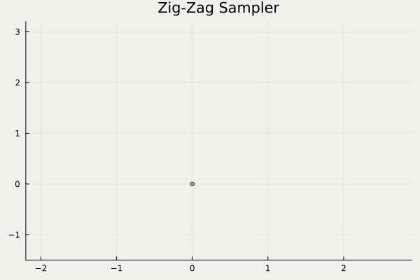
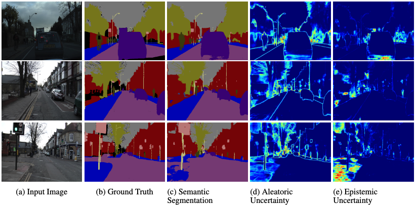
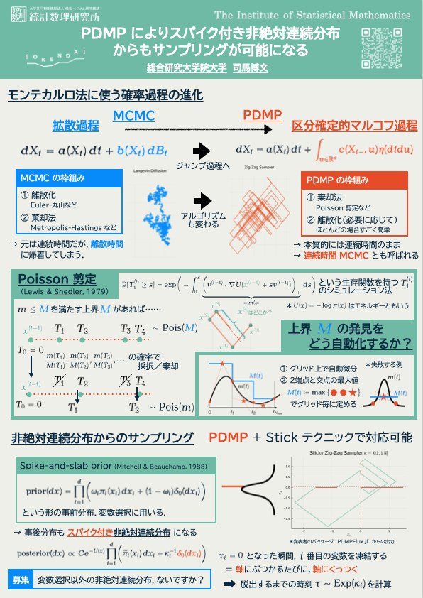
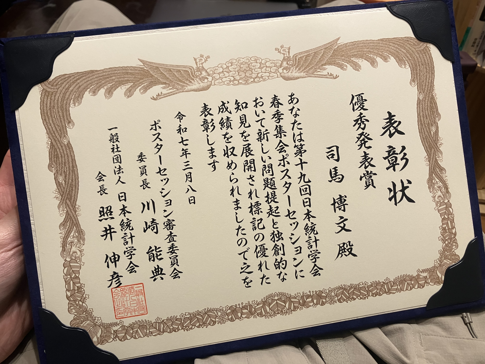
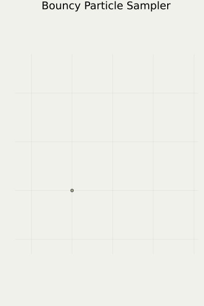

1 これまでの研究実績

PDMPFlux.jl パッケージからの出力．1.1 目標：信頼のおける AI を開発する
→ 行政，政治科学，生物学，個別化医療……への応用
提案：ベイズ法を使う
ベイズ法：統計学では歴史が長い
ベイズ × AI が近年の問題意識

(Kendall and Gal, 2017)
1.2 PDMP によるベイズ法の拡張
課題：ベイズ法は拡張性がない（＝大規模データで計算量が爆発）

以上の理論研究に従事

1.3 パッケージの開発
- 従来は汎用パッケージがなく，PDMP の応用研究は皆無 → 分野内唯一の汎用 PDMP パッケージを開発
- 公式リポジトリに登録済み
→ 政治科学・予防医療での共同研究が進行中
PDMPFlux は使用者が自由に指定した入力に従う PDMP を実行可能．1.4 実績：研究発表と受賞

- 第19回日本統計学会春季集会
優秀発表賞 - 統計検定センター長賞

2 今後の研究計画
理論と応用の一気通貫で，
新手法 PDMP の スケーラビリティ を検証する
2.1 理論の現状

(Bierkens et al., 2019)
動きが単純すぎる
→ 解析の簡単なものに対象を絞っているから

(Bouchard-Côté et al., 2018)
反射法則が単純すぎる
2.2 最も有望な手法は理論の射程外
(Bierkens et al., 2019)
動きが単純すぎる

(Michel et al., 2020)
いずれも適度にランダム
(Bouchard-Côté et al., 2018)
反射法則が単純すぎる
2.3 理論研究の目標
実践上の需要と理論的手腕を持ち合わせた申請者ならではの研究
2.4 応用研究の着手点
スケーラビリティの大規模統計データでの検証

→ PDMP を米国議会議員４３５人に適用できるか……？
2.5 応用研究ではデータが重要
申請者が共同研究を開始している分野：
政治科学
４３５人の議員の背景情報（学歴，収入，etc）だけでなく，選挙区の情報（人種組成，学歴，etc）も取り入れたい．
予防医療
毎年の健康診断のデータ＋新規顧客の血液・腸内細菌叢・メンタルヘルスの超高次元データ
いずれも大量のデータが解析されるのを待っている＆ベイズ法の適用が重要 → PDMP の検証に最適
3 キャリアパス構想

研究派遣プログラムにて，英国 UCL に１ヶ月間滞在（2024年11月）
3.1 本プログラムへの期待：国際協力
AI 分野は急速に進展しており，国際連携が肝心．
申請者は TOEFL 100 点 を超える英語力を持ち，国際連携に積極的
しかし AI 研究の中心地には物価水準の高い国が多い．
- 継続的な協力関係を維持するため，博士期間中に複数回訪問する機会を作りたい．
3.2 キャリアパス構想
- 本プログラムを通じて活発に国際連携を行い，将来的にはイギリスやアメリカ，シンガポールなど，国を選ばずに通用する研究者を目指す
- 理論と応用を一気通貫で研究する AI 人材を目指す
- 確固とした数理力
- 万人が使える形に実装するプログラミング力
- AI で解決できるイノベーションを見つける学際性
参考文献
Bierkens, J., Fearnhead, P., and Roberts, G. (2019). The Zig-Zag Process and Super-Efficient Sampling for Bayesian Analysis of Big Data. The Annals of Statistics, 47(3), 1288–1320.
Bouchard-Côté, A., Vollmer, S. J., and Doucet, A. (2018). The bouncy particle sampler: A nonreversible rejection-free markov chain monte carlo method. Journal of the American Statistical Association, 113(522), 855–867.
Kendall, A., and Gal, Y. (2017). What uncertainties do we need in bayesian deep learning for computer vision? In I. Guyon, U. V. Luxburg, S. Bengio, H. Wallach, R. Fergus, S. Vishwanathan, and R. Garnett, editors, Advances in neural information processing systems,Vol. 30. Curran Associates, Inc.
Michel, M., Durmus, A., and Sénécal, S. (2020). Forward event-chain monte carlo: Fast sampling by randomness control in irreversible markov chains. Journal of Computational and Graphical Statistics, 29(4), 689–702.